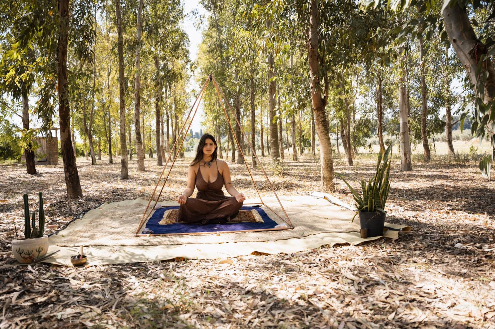

Single
לאדם אחדלתרגול אישי יומיומי. נכנסת לפינה בחדר, ומספיקה לישיבה נוחה בתנוחת לוטוס.
בסיס 120 ס״מ · גובה כ-115 ס״מ
להזמנת Single בוואטסאפ
נחושת אדומה היא נחושת טהורה, בגוון החם והאדמדם שלה. היא אחת המתכות הראשונות שהאדם עבד איתן, והשתמש בה לכלים, לתכשיטים ולטיהור מים.
היא מוליכה חשמל וחום טוב כמעט מכל מתכת אחרת, ולכן היא החומר המסורתי לבניית פירמידות אנרגטיות.
לפי תפיסות רבות, מבנה נחושת סגור יוצר סביב היושב מעטפת שמפחיתה את השפעת הקרינה האלקטרומגנטית מהסביבה.
הנחושת מוליכה ומגבירה אנרגיה, ובשילוב צורת הפירמידה מתרגלים רבים מתארים ריכוז עמוק יותר ותחושת רוגע.
לנחושת אדומה תכונות אנטי-בקטריאליות מוכרות, והיא לא מחלידה. עם השנים היא מקבלת פטינה חמה משלה.
צינורות נחושת מלאה, בלי ציפוי. מתאים לשימוש בבית ובחוץ, ונשמר לשנים.
לפני כ-4,500 שנה בנו המצרים את הפירמידה הגדולה בגיזה שבמצרים.
זו לא הייתה רק קבורה של מלך: הצורה עצמה נחשבה בעיניהם לדרך של האור לרדת מהשמיים אל הארץ, וכל פאה כוונה במדויק לאחת מארבע רוחות השמיים.
מאז ועד היום, מסורות רבות מייחסות לצורת הפירמידה יכולת לרכז ולמקד אנרגיה בנקודה שמתחת לקודקוד. הפירמידות שלנו בנויות בהשראת היחסים של גיזה, כך שמי שיושב בפנים נמצא בדיוק במרכז הזה, באותו מקום שבו המצרים הציבו את חדר המלך.
כל פירמידה נבנית בעבודת יד מצינורות נחושת מלאה, מתפרקת לאחסון ומגיעה עם קריסטל לתלייה בקודקוד.
לתרגול אישי יומיומי. נכנסת לפינה בחדר, ומספיקה לישיבה נוחה בתנוחת לוטוס.
מרחב לשני אנשים: מדיטציה זוגית, או טיפול רייקי ועבודה אנרגטית כשהמטפל בתוך המבנה.

הדגם הגדול, לסטודיו, לריטריט או לגינה. אפשר לשכב בתוכו לגמרי או להושיב מעגל קטן.
נשמח לעזור לבחור גודל, לענות על שאלות ולתאם משלוח או איסוף. כל פירמידה נבנית בהזמנה אישית.
שליחת הודעה